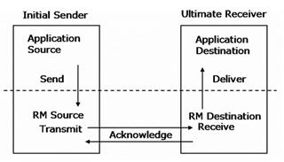
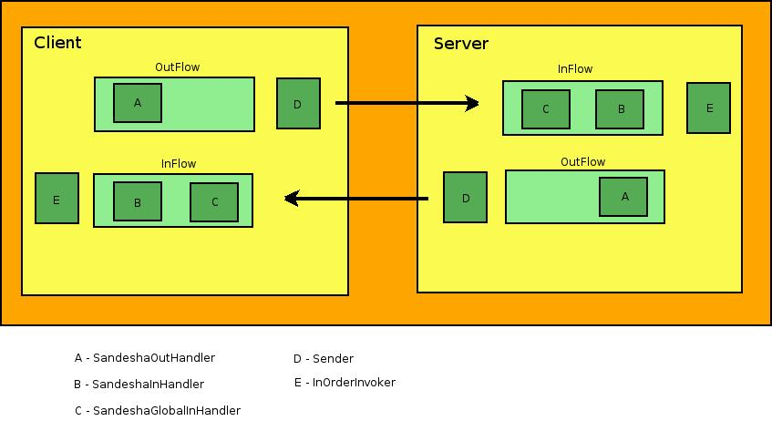
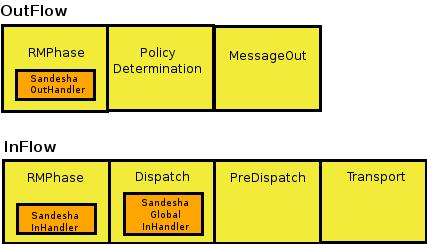
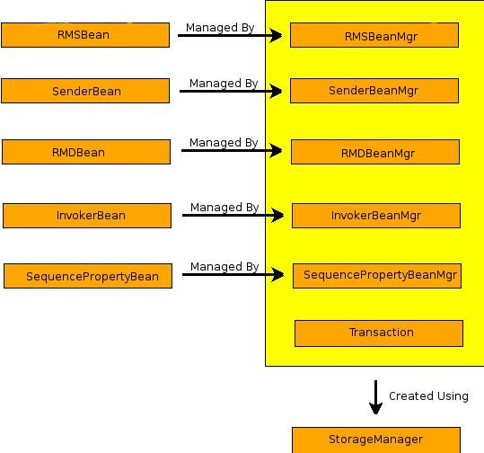

Sandesha2 gives reliable messaging capabilities to Axis2. From the point of view of the Axis2 engine, Sandesha2 is a module. When this module is engaged to a service, clients have the option of invoking it in a reliable manner. In the client side Sandesha2 module can be used to interact with existing reliable Web services.
According to the Web service-ReliableMessaging (WS-RM) specification which is implemented by Sandesha2, reliable communication happens between two endpoints. These endpoints are called the RM Source (RMS) and the RM Destination (RMD). Before communication, RMS and RMD perform a message exchange to create a relationship called a Sequence between them. A Sequence is always identified by a unique Sequence Identifier.
Each message of a sequence is numbered, starting from one. In Sandesha2 the maximum number of messages a sequence can support is 2 64 (size of long data type). Of course practically this may be limited by the memory available for your system . The message number is used by the destination to support additional delivery assurances. This will be explained later in this tutorial.
The reliability is obtained basically using acknowledgements. RMS is required to send each message one or more times to the RMD. RMD sends back acknowledgements to notify the successful reception of messages. After receiving an acknowledgement for a certain message RMS can stop the retransmission of that message.
When all messages of a certain sequence have been successfully transmitted to RMD, RMS sends a TerminateSequence message. If RMD receives this message it can free any resources allocated for this sequence. Otherwise resource de-allocation will happen based on a timeout.
Following diagram explains operation of the RMS and the RMD.

Sandesha2 supports two reliable messaging specifications. It fully supports WS-ReliableMessaging February 2005 specification which was created by collaborative efforts of several companies. Later this specification was submitted to OASIS and currently being standardized under the OASIS WS-RX technical committee. Sandesha2 supports up to the revision CD 3 of the specification being developed under this technical committee.
Sandesha2 components are used in a completely symmetric manner, in the server side and client as shown in the diagram above. Lets just consider a single side for this discussion.
Sandesha2 adds three handlers to the execution chain of Axis2. Two of these handlers are added to a special user phase called 'RMPhase' of in and out flows. The other handler is added to the predispatch phase of the inFlow. These handlers and their functions are given below.

This is added to the RMPhase of the inFlow. Since RMPhase is a user phase, this handler will only be invoked for messages that are aimed at RM enabled service. This handler will identify the type of this message. The type can be an application message (a message that has to be delivered to the service) or a RM control message. Sandesha2 has a special set of classes called message processors which are capable of processing each type of message. Depending on the type, the message is send through the 'processInMessage' method of the message processor which will do the further processing of it.
This handler is responsible for doing the basic outFlow processing. This will first generate an ID called the Internal Sequence ID which is used to identify the sequence this message should belongs to. All the messages having the same Internal Sequence ID will be sent within a single sequence. An Internal Sequence ID will have a corresponding Sequence ID which would be obtained after the Create Sequence message exchange. In the client side the Internal Sequence ID is the combination of the wsa:To address and a special value given by the client called Sequence Key. In the server side the Internal Sequence ID is a derivation of the Sequence ID value of the messages of the incoming sequence.
Before sending the message through other handlers the SandeshaOutHandler will send it through the 'processOutMessage' method of the respective message processor.
This handler is added to the predispatch phase of the inFlow. Since this is a global phase, this handler will be called for each and every message that comes to the Axis2 system. To maximize performance, the very first function of this handler is to identify whether the current message can be processed by it. It checks whether the message is intended for a RM enabled service, and if so, check the message type to further verify whether it should be processed globally. This handler was placed to perform functions that should be done before the instance dispatching level of Axis2.
Some of these functions are given below:
Sender is responsible for transmission and retransmission of messages. The Sender is a separate thread that keeps running all the time. At each iteration Sender checks whether there is any messages to be sent. If there is any, it is sent to the destination. Sender also identifies messages that has to be retransmitted and keep re-sending them until a maximum limit decided by Sandesha2 policies is exceeded.
Sandesha2 have a set of classes called message processors, each implementing the MessageProcessor interface. Each message processor is responsible for processing a certain type of message. For example, CreateSequenceProcessor will process CreateSequence messages and AcknowledgementProcessor will process Acknowledgement messages. The message processor interface defines two methods for processing incoming messages and outgoing messages. (namely 'processInMessage' and 'processOutMessage')
InOrderInvoker is another separate thread that is started by the Sandesha2 system. This is started only if Sadesha2 has been configured to support in-order delivery assurance. InOrderInvoker makes sure that it invokes messages of a sequence only in the order of message numbers.
Sandesha2 storage framework is one of the most important parts of the Sandesha2 system. This was designed to support the RM message exchange while being independent of the storage implementation used. The storage framework defines a set of interfaces and abstract classes that can be implemented by a particular storage implementation. Sandesha2 system comes with an in-memory storage implementation. There can be other implementations based on different databases and persistence mechanisms.
Following diagram gives a brief view of the Sandesha2 storage framework.

Storage framework defines several beans that extend the RMBean abstract class. They are given below:
There are five bean manager interfaces corresponding to each of above beans.They are as follows:
Sandesha2 also defines a StorageManager interface that defines methods to create each of these bean managers and to create a Transaction object which should implement the Transaction interface. Transaction interface defines commit and rollback methods.
Collectively each Sandesha2 storage implementation should have following classes:
These classes can be packed as a jar archive and added to the classpath. The name of the StorageManager implementation class has to be mentioned in Sandesha2 policy configurations. This will be picked up after a restart of the the Axis2 engine.
Sandesha2 can provide an in-order exactly-once delivery assurance. The ordering (in-order) is optional. You can disable it using Sandesha2 policy configurations. The ordering is done using the InOrderInvoker thread that was introduced earlier.
If ordering (in-order) is enabled, SandeshaInHandler pauses the execution of an incoming application message. As a result of this, the message will not go through rest of the handler chain in the first invocation. Note that it also starts the InOrderInvoker thread if it is stopped. This thread goes through the paused messages and resume each of them in the order of message numbers.
If in-order invocation is not enabled the SandeshaInHandler will not pause the messages and they will go in their full execution path in one go.
The delivery assurance to be used depends on your requirements. If you want the invocation to be as fast as possible, and you do not care about ordering, disable in order invocation. But if you want message to be invoked in the order they were sent by the client, you have to enable it. There could be a considerable performance improvements if this feature is disabled. Specially if majority of the messages come out of order.
In the current implementation, each message (identified by sequenceID and message number) will be invoked only once. So exactly once delivery assurance is guaranteed. You cannot ask Sandesha2 to invoke the same message more than once.
This part explains how Sandesha2 framework works internally for the most common RM scenario, which is the sending of a couple of Ping messages from a client to the server. We will mainly look at how Sandesha2 uses its storage to do the RM message exchange correctly. While going through the following, keep the RM Beans and their fields which were mentioned earlier, in mind.
Lets assume that the message number of this message is 2.